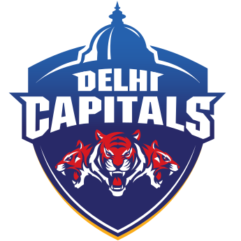

|  | |
| Captain | Rishabh Pant |
|---|---|
| Coach | Ricky Ponting |
| Ground | Feroz Shah Kotla |
The Delhi Capitals are a franchise cricket team based out of Delhi in the Indian Premier League (IPL). Founded in 2008 as the Delhi Daredevils, the franchise is jointly owned by the GMR Group and the JSW Group. The team's home ground is Arun Jaitley Stadium, located in New Delhi. The Capitals appeared in their first IPL final in 2020.